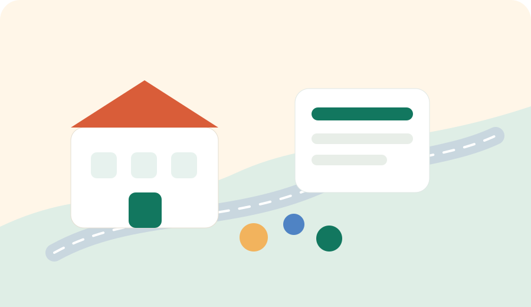

Kids Evening Route
운정 학원·도서관·저녁 귀가 동선은 마지막 10분이 중요합니다.
초등 고학년부터 중고등 자녀는 하교 후 학원, 도서관, 독서실, 집을 오가는 시간이 길어집니다. 이때 부모가 확인해야 할 것은 학원 이름만이 아니라 버스 정류장, 횡단보도, 조명, 비 오는 날 픽업 위치, 늦은 시간 귀가 동선입니다.

부모가 실제로 봐야 할 체크포인트
| 구간 | 확인할 것 | 좋은 기준 | 주의할 점 |
|---|---|---|---|
| 학교에서 학원 | 도보 시간, 횡단보도, 큰 도로 | 아이가 혼자 설명할 수 있는 단순한 길 | 차량 진입로와 공사 구간은 수시로 바뀔 수 있습니다. |
| 학원에서 도서관 | 버스 정류장, 실내 대기 공간 | 비 오는 날에도 이동 부담이 적은 동선 | 막차와 배차 간격을 함께 봅니다. |
| 저녁 귀가 | 조명, 상가 밀집도, 픽업 위치 | 부모가 기다릴 수 있는 안전한 정차 지점 | 골목보다 큰 길 중심으로 동선을 잡습니다. |
| 시험 기간 | 도서관 운영시간, 좌석, 귀가 수단 | 공식 운영시간과 휴관일을 확인 | 행사·휴관일은 도서관 공지를 우선 봅니다. |
학원가를 볼 때 함께 보면 좋은 생활 정보
운정의 학원·상가 생활권은 병원, 약국, 문구점, 편의점, 주차장과 붙어 있는 경우가 많습니다. 아이가 스스로 이동하는 나이가 되면 “가까운 학원”보다 “돌발 상황 때 어디로 갈 수 있는지”가 더 중요해집니다.
- 아이 휴대폰 배터리가 없을 때 연락할 수 있는 장소를 정합니다.
- 비 오는 날 픽업 위치와 평소 귀가 위치를 따로 정합니다.
- 도서관, 병원, 약국, 버스 정류장을 같은 지도에서 확인합니다.
관련 카페 후기 보기
네이버 카페 공개글 기반 학원 동선, 도서관 이용, 저녁 귀가에 대한 지역 후기를 확인합니다.
카페 공개글을 불러오는 중입니다.
네이버 카페 공개글 검색 결과를 확인합니다. 후기 글은 개인 경험이므로 학교·도서관·교통 공식 안내를 다시 확인하세요.